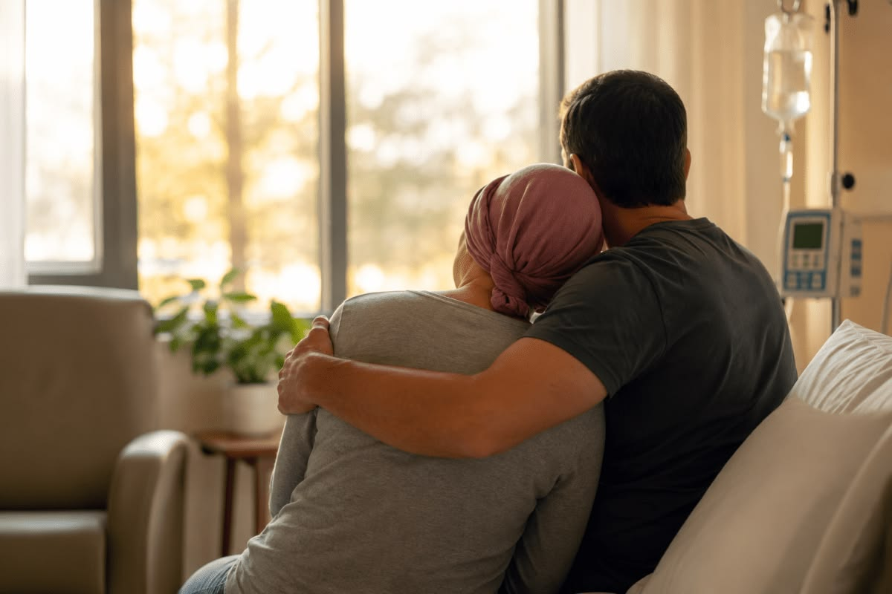

Sobre nós
Acolhimento, apoio e comunidade.
Conheça a AAPEC, sua história, missão, visão e os valores que orientam seu trabalho.
História
A Associação de Assistência aos Portadores e Ex-Portadores de Câncer foi idealizada em setembro de 2005 e fundada em 22 de junho de 2006, em Barra Velha/SC.
Desde então, a associação desenvolve ações de apoio, orientação e acolhimento para pacientes, ex-pacientes, familiares, voluntários e comunidade.
Missão
Promover acolhimento, apoio e fortalecimento para pessoas que enfrentam o câncer e suas famílias, articulando serviços, informação, solidariedade e participação comunitária.
Ser uma referência local em apoio e acolhimento, fortalecendo redes de cuidado e solidariedade.
Conheça a AAPEC
Uma rede construída por pessoas.
A associação reúne pacientes, ex-pacientes, familiares, voluntários e pessoas que desejam contribuir com uma comunidade mais acolhedora.
Busco acolhimento